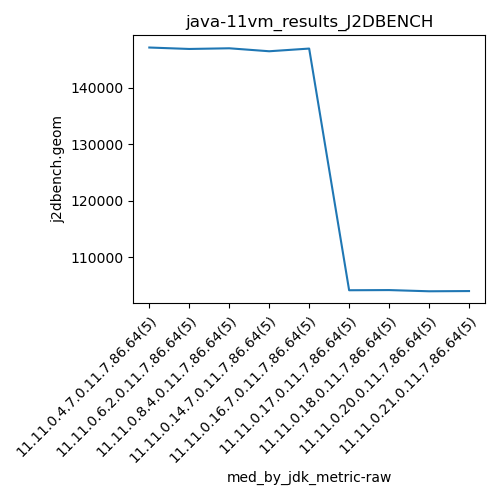

java-11 J2DBENCH
Context at bottom
/home/jvanek/git/benchmarks-in-nested-virtualisation-toolchain/final_results/vm_results/vm_results_RADARGUNs1
java-11
J2DBENCH
/home/jvanek/git/benchmarks-in-nested-virtualisation-toolchain/final_results/vm_results/vm_results_RADARGUNs3
java-11
J2DBENCH
/home/jvanek/git/benchmarks-in-nested-virtualisation-toolchain/final_results/vm_results/vm_results_DACAPO
java-11
J2DBENCH
/home/jvanek/git/benchmarks-in-nested-virtualisation-toolchain/final_results/vm_results/vm_results_J2DBENCH
java-11
J2DBENCH
vm_results_J2DBENCH
final score
Expected number of java-11 JDKs: 11
1st avgmed_alljdks_metric:
/home/jvanek/git/benchmarks-in-nested-virtualisation-toolchain/final_results/result_processing.py /home/jvanek/git/benchmarks-in-nested-virtualisation-toolchain/final_results/vm_results/vm_results_J2DBENCH j2dbench.geom False
values: [146918, 147207, 147273, 147141, 146364, 146728, 146605, 146886, 147244, 147121, 146943, 146813, 147144, 147005, 147284, 146480, 146064, 146361, 146643, 146549, 146933, 145802, 147100, 147021, 146955, 104924, 104187, 104420, 103976, 103902, 104732, 104993, 104182, 104218, 103692, 104005, 104314, 103230, 103621, 105012, 104562, 104043, 104992, 103822, 102399]

Expected number of iterations: 5
final number of values: 45 out of 55
Pass rate: 81.8%
values: (102399, 147284, 127862.44444444444, 146361)

** accuracy from all jdks and runs
more is better
MIN: 102399
MAX: 147284
AVG: 127862.44444444444
MED: 146361
Relative differences 1:
MIN-MAX: 30.0 %
MIN-AVG: 20.0 %
MIN-MED: 30.0 %
MAX-MIN: -44.0 %
MAX-AVG: -15.0 %
MAX-MED: -1.0 %
AVG-MED: 13.0 %
stored to java-11.properties. sort | uniq that!
2nd avgmed_by_jdk_metric:
values: [146980.6, 146916.8, 147037.8, 146419.4, 146762.2, 104281.8, 104363.4, 104036.4, 103963.6]

values: [147141, 146886, 147005, 146480, 146955, 104187, 104218, 104005, 104043]

values: (103963.6, 147037.8, 127862.44444444444, 146419.4)
values: (104005, 147141, 127880.0, 146480)

** accuracy from all jdks where runs were avged
more is better
MIN: 103963.6
MAX: 147037.8
AVG: 127862.44444444444
MED: 146419.4
Relative differences 1:
MIN-MAX: 29.0 %
MIN-AVG: 19.0 %
MIN-MED: 29.0 %
MAX-MIN: -41.0 %
MAX-AVG: -15.0 %
MAX-MED: -0.0 %
AVG-MED: 13.0 %
stored to java-11.properties. sort | uniq that!
** accuracy from all jdks where runs were medianed
more is better
MIN: 104005
MAX: 147141
AVG: 127880.0
MED: 146480
Relative differences 1:
MIN-MAX: 29.0 %
MIN-AVG: 19.0 %
MIN-MED: 29.0 %
MAX-MIN: -41.0 %
MAX-AVG: -15.0 %
MAX-MED: -0.0 %
AVG-MED: 13.0 %
stored to java-11.properties. sort | uniq that!
/home/jvanek/git/benchmarks-in-nested-virtualisation-toolchain/final_results/vm_results/vm_results_SPECJBB
java-11
J2DBENCH
/home/jvanek/git/benchmarks-in-nested-virtualisation-toolchain/final_results/vm_results/vm_results_JMH
java-11
J2DBENCH
pass rates:
vm_results_J2DBENCH=81.8%
Context:
- vm_results
- J2DBENCH